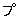

| えぞおばけ列伝 | |
| Unknown | |
| (2012) | |
えぞおばけ列伝
屋内に独りいると突然炉の中でポアと音を発する．するとあちらでもポア，こちらでもポアとさいげんがない．臭くてかなわない．そういう際には，こっちでも負けずにポアと放してやれば，恐れ入って退散する．あいにくと臭いのが間に合わぬときは，ポアと口真似するだけでも退散するというから，このおばけ案外に気はやさしいのかもしれぬ．名は「オッケオヤシ（１）
」（屁っぴりおばけ），または「オッケルイペ（２）
」（屁っこき野郎）という．
前記の「屁っぴりおばけ」というのは樺太アイヌの日常生活や説話の中に出てくるおばけである．おばけなどというよりは，おやじと呼びたいくらい邪気のないおばけだ．このおやじの放屁の偉力を示す説話をひとつ，次に紹介しておく．
ヤイレスポ（３）
とパーリオンナイ（４）
が隣りあって住んでいた．
ある日パーリオンナイは部下を連れて舟をつくりに川上へのぼって行き，舟をつくりあげてそれに乗って下って来ると，川岸に一人の若者がいて，
「パーリオンナイさん，私を舟にのっけてつれて行ってくれないか」
と言うので，その男をのせて下って行くと，男は舟にゆられゆられ
ナンタテレケ ヨーイトサ
（船首
へよろよろ ヨーイトサ）
ウンタテレケ ヨーイトサ
（船尾
へよろよろ ヨーイトサ）
と歌っていたが，とつぜん，
ポア
と放屁した．そのため舟は船首
の所まで裂けてしまった．男は舟から飛びだして逃げてしまった．パーリオンナイは部下とともに川へ落ちて流れただよい，やっとのことで家へ帰りついた．
それから二日たち三日たって，こんどはヤイレスポが部下をつれて舟をつくりに山へ行った．そして二日がかりで舟をつくって，それに乗って川を下って来ると，川岸の砂の上に一人の男がいて，
「ヤイレスポのだんな，私を舟にのっけてつれて行ってくれませんか」
とたのんだ．ヤイレスポが，
「おや，へっぴりおやじではないか．なんだってお前，舟なんかにのりたがるのだ．だめだ，だめだ」
と言うと，それでもしつこくせがむ．うるさくなって舟にのせると，部下の者は口々に，なぜへっぴりおやじなぞ乗せるんだとヤイレスポに食ってかかった．そのうちにヤイレスポは隙
を見て，
「へっぴりおやじを，みんなでぶんなぐれ」
と命令したので，若者たちが寄ってたかって棒でなぐり殺したら，一匹の黒狐（５）
であった．
それを皮剝ぎして，肉と骨はこまかく切りきざんで，草にも木にも食物として分けてやった（６）
．皮は内地へ交易に行ったとき，売ってさまざまの宝物に換え，へさきの舟底に積み重ね，ともの舟底に積みならべて村へ帰り，ヤイレスポはすごい長者になった．
山野で腐れ木の根もとなどに火を焚
いてあたりながら弁当の包みをといていると，とつぜん背後から手を出して，
「食べもの，おくれ！」
と言う．言うままに何か与えると，いくらでも手を出して，きりがない．そこでありあわせの砥石
を真赤に焼いて，手のひらにのせてやると，
「無いなら無いと，なぜ言ってくれんのですか？」
と叫んで退散するという．砥石が無けりゃ燠
をのせてやってもいい．
このおばけ，名は「イペカリオヤシ（７）
」（食物ねだりするおばけ），またの名を「マワオヤシ（８）
」（腹ぺこおばけ）という．これも樺太のおばけである．
樺太に，「トイポクンオヤシ（９）
」（地下のおばけ）というのがいて，名のとおり地下にひそんだまま決して姿を見せない．簡単に「トイポクンペ（10
）
」（地下の者）ともよぶ．林野を女が歩いていると，行く手に忽然
として地中からキノコ様
のものが現われて，ホタリホタリ（11
）
している．その時すこしもあわてず前をまくって，
エアニ パテッ お前さんのだけが
チイ エコロ？ 立派だというの
チョーカイ カイキ わたしのだって
ポッ チコロホ‼ 負けないわよ！
エオチウルスイ チキ したいのなら
ウコオチウアン‼ しましょうよ！
と言って，その所作をまねると満足して退散する．これは相手が男性のトイポクンペの場合だが，相手が女性のトイポクンペなら，カラス貝様
のものだけ地表に露わして，オヘッラヘラ（12
）
させているものだという．その場合は多少文句を変えて，
エアニ パテッ おや，すばらしい
ポッ エコロ？ しろものだな
チョーカイ カイキ だが，俺のだって
チイ チコロホ‼ 負けやせんぜ
エオチウルスイ チキ やりたいなら
ウコオチウアン‼ やらかそうじゃないか
と言いながら，その所作をまねると，大いに満足して退散するという．
ばけもの婆が，幼児の魂を盗んで，背に負い，自分の村へ，帰って行った．
ヤイレスプは，それを取り戻そうとして模様のついた鳥，彫刻した鳥に身を変じて，飛んで行った．
それを見て，幼児がこう言った．
これ，ばけもの婆
小矢を作っておくれ
小弓を作っておくれ
模様ある鳥
彫刻した鳥を
射るのだから――
すると，ばけもの婆が，こう言った．
これ，こども，
おれの村へ
行き着いたら
小矢を作ってやろう
小弓を作ってやろう
そしたら
模様ある鳥
彫刻した鳥を
射て取るがいい
幼児は，頭を左右に振って泣き，手足をばたばたさせて泣いた．
泣くんじゃないよ
泣くんじゃないよ
ばけもの婆は，子守歌を歌ったけれども，幼児は，手足をばたばたさせて泣き，頭を左右に振って泣いた．頭を左右に振って泣き，手足をばたばたさせて泣いた．
ばけもの婆は，もてあまして，とうとう，針のように尖った細長い小刀（13
）
を取り出して，小矢を作り，小弓を作り，幼児に与えた．
幼児は，大喜びで，模様ある鳥，彫刻した鳥を，射ようとして，追っかけた．
ヤイレスプは，ばけもの婆の，背負っている幼児に，今にも射落されそうにしながら，追っかけさせた．
ばけもの婆は，あわてて，身をふりふり，追っかけているうちに，ばけものというものは，夜に強く，昼に弱いものだから（14
）
，だんだん体が地中にめりこんで行き，腰まで地中に没した．
ヤイレスプは，見て見ぬふりをしながら，模様ある鳥，彫刻した鳥になって幼児に追わせているうちに，ばけもの婆は，頭のてっぺんまで，すっぽりと地中に没してしまった（15
）
．
ヤイレスプは，大よろこびで，幼児の魂を捕えて連れて帰り，死者の体の中にそれを入れて蘇生させた．
俺は，家を守って暮していた．来る日も来る日も，わが入江を見守って暮していた（16
）
．海鳥の水くぐり遊ぶさま，海面の大きな波のうねり，よせる波，さしひく波，そればかり眺めて，俺は暮していた．
ところが，どうしたわけか，今日は，ばかに眠い．どんなに眠るまいとしても居眠りが出て，上座の方へこくり，下座の方へこくりしていたが，とうとう横になって，手枕をして，うつらうつら夢を見た．
ふと気がつくと，俺は常の座に坐って，沖の方を眺めていた．外国の海とこちらの海との中間に（ずっと沖の方にの義）見しらぬ国の大船がいるのが見えた．シルクルの船，シルクルの大将が来ると覚えた．船尾の方には，シルクルが座をしめ，一方には，白い靄
が立ちこめて，その合間合間にちらと見えるのは，人か神か，よく分らなかった．シルクルの話す声が聞えて来た．
「俺はヤイレスポの治める国へ行くのだ．彼の家へ行って美しい妹の魂を盗んで，連れ帰って妻にするのだ」
すると，船の一方，白い靄の中に声がして，
「俺は饑饉魔だ．若い女どもが塵芥
をふりかけ，蓆
の上から踏みつけたって，俺の姿を見あらわすことはできない．ところが，君など，人からも，犬からも姿を見られているのだ．ヤイレスポの村へ行ったとて，思うようにはなるまい」
という神々の口争いが聞えてくる．そのうちに船は早くもわが入江に入って来て，やがて浜へ着いた．波に押されて船の上
がるのが見えた．彼らは川岸に上ると，さっそく草小屋を立てはじめた．俺はひどく腹が立った，――という所で目がさめた．夢を見たのであった．
俺は宝壇から航空船（17
）
をとり下し，それに乗って，わが家の天窓から神風を伴って飛びだした．
見ると，本当にわが渚
に近く，川岸に，草小屋が立っている．無性に腹が立って，勢こんでそばへ近づいて，草小屋の神窓に手をかけ，風よけむしろをかき分けて屋内を窺
うと，シルクルが右座にあぐらをかき，左座には白靄が立ちこめている．夢で見たとおり，彼らは口争いをしていた．
俺は，腹立ちまぎれに，小屋の屋根に手をかけて揺さぶり，長く傾け，短かく傾けて，小屋を川の中に投げちらしてしまった．すると白い靄がまき起って，上空さして立ちのぼり，その間々に，真白い足の裏（18
）
をちらつかせて逃げてしまった．
それを見て俺は家に帰り，乗って行った航空船を棚の上にしまいこみ，以前のように家にいて，わが入江を見守って暮していた．
ヤイレスポとポニポニクフは，毎年，木幣の貢物を俺にささげて，俺を敬ってくれたので，季節季節の食物を豊かに恵んでやっていた．
今年は，どうしたわけか，漁の季節に入ってもう二ヵ月にもなるのに，まったく漁がない．いくら待っても，魚群はまったく姿を見せなかった．そこで，俺は，その原因をさぐるために，糸編みの敷物をたたんで奥にしまいこみ，窓をしめ，戸を紐で縛って，山手の木原を越え，浜手の木原を越え，山を下って里へ来た．
見れば，あたりの景色の美しさ．草原が矢の行くように打続き，その向うに，砂原が矢の行くようにずっと続いている．海上には，黄金の美しい小鳥どもが，水に潜り，また浮び上る．その音のたのしさ．
しばしこの景色に見とれていたが，ふとヤイレスポの家を眺めると，天窓から煙が出ていない．ポニポニクフの家の天窓のあたりにも，煙はなかった．
不思議に思って，ヤイレスポの家の戸を開けて，中を見たが，人影がない．ポニポニクフの家の戸を開けて見たが，やはり人影が無かった．
外へ出て，あちらこちら見廻すと，沖の方を大きな船が行く．船の中にはヤイレスポと，ポニポニクフと，その部下たちの死体が，舳先
に積みあげられ，艫
に積みあげられてあった．
そこで，俺は，草原の小鳥に身を変じて，浜手の木原に飛び行き，赤いトリカブトの根を掘って胸に抱き，山手の木原に飛んで行って，白いトリカブトの根を掘って，背負って，丘を飛び越え，砂浜を飛び越え，魔の船を追った．
昼六日，夜六日，魔の船を追って，魔の国へ着いた．
魔物は，家来を指揮して，ヤイレスポとその部下の死体を，舟からあげて，浜手の砂山，山手の砂山を越えて，家の下へ運び入れた．
俺は横窓から家の中を覗いた．魔物の妻がこういって訊ねた．
「この人間の肉は，新しいのを炊きましょうか？」
すると魔物が反対した．
「古い肉の方がいい．新しい人間の肉は，海に疲れ，船に疲れたときには，悪いものだ」
そこで魔物の妻は，六つの耳のついた大鍋に水を入れ，火にかけた．そして古い人肉を大片に切って煮た．
俺はそのとき窓から入って，まず，赤いトリカブトの根を小刀で細かく刻んで，鍋に入れた．赤い泡が炉ぶちにこぼれた．次いで，白いトリカブトの根を鍋の上で切り刻んだ．
肉が煮えたので，魔物の妻は，鍋をとりおろして，木の椀に入れて一同の者に食べさせた．
この肉汁を吸った者は，たちまち死んだ．肉を切って食べたものも，たちどころに死んだ．
俺は，そこで，魔物の船を出して，ヤイレスポとポニポニクフと，その部下の死体を運び入れ，魔の家財のうち，悪いものは破棄し，よいものは船に積んだ．魔物の家は灰に焼いてしまった．
魔物の船はヤイレスポの国へ着いた．死体を家の中へ運び入れて，二つの手草
を作り，それで死体を祓
って，彼らを蘇生させた．
ヤイレスポとポニポニクフは，たいへん俺に感謝して，夥
しい木幣の荷，食物の荷を，俺に捧げた．俺は安心して，自分の家に帰って，彼らを見守っている．彼らは，海狩に出ても，山狩に出ても，幸運に恵まれた（19
）
．
これも樺太のおばけで，「カヨーオヤシ」（人呼びおばけ）というのがいる．山狩りなどに行ったとき，どこかでオーイと呼ぶ．うっかり釣りこまれて行くと命が危い（20
）
．
――付，幻聴・幻視などのこと
山の中などで何者とも知れぬ者に呼ばれることがある．そういうときは，すぐに返事をするものではない．最初は聞き流し，二度目にも聞き流し，三度目に，いよいよ人間の呼び声だなと分ったら，はじめて返事をする．それも，山の中では特別のことばを使う．ふだん里で人を呼ぶときには，名を呼んだり，「アイロー」（おーい）とか「エカチー」（おーい）とか言って呼ぶのだが，山の中ではかならず「ハンペー」と言って呼ぶ．また返事をするのにも，里では「ホーイ」とか「オーイ」とか答えるのだが，山の中ではやはり「ハンペー」と答える．「ホーイ」「オーイ」などと答えると，魔にもその意味が分って，人間の方へやって来る．ところが，「ハンペー」では何のことか分らないので諦めて行ってしまう．これは北見
国美幌
部落で使う山ことばだが，胆振
国穂別
部落では「カッチー」ということばを使う．
（kampe
は「父」，katči
は「せがれ」の訛り）
山の中で，自分の名ではなく，誰か知らぬ人の名が呼ばれるのを聞くことがある．それは実は神の名で，神々が山を隔てて名を呼びかわしているのだ．そういう名を聞いたら，それを自分の子どもにつけるとその子は長命を保つという．
何かしているとき，ふと自分の名を呼ばれたような気のすることがある．方言によって「オア・イヌ」「オワ・イヌ」「オハ・イヌ」（空聞きの意）などという．これは，あの世の人にも，この世の人と同じ名があるものなので，あの世の人々どうしで名を呼びあっているのだ．そういうのを聞いて，うっかり返事をしたときは，かならず改名しなければならない．
明治のはじめ頃，美幌
の部落にイコトナシという婆さんがいた．その婆さんがある日，引網をしていると，イコトナシと呼ばれたような気がしたので，うっかり「ホオ？」と返事をしたら，誰もいなかった．ふしぎに思いながらも，そのまま名も変えずにいると，数年後にとつぜん原因も分らずに死んでしまった．
室蘭
の絵鞆
部落に明治十年頃の生まれでカクラという女がいた．「カクラ」（kakura
）とは，昔の支那そばの出
しによく入って来たフジコのことだ．この婆さん，幼女のじぶんは，さっぱり成長せず，フジコのようにごろごろしていたので，そんな名がついた．十四のとき，日高
国の幌泉
の浜へウニを捕りに行き，捕ったウニを岩の上に上げて，昼食をとりに帰っていると，沖の方でカクラ‼ と呼ぶ声がした．ホーと返事して浜へ出て見たが誰もいない．魔に呼ばれたんだというわけで，カクラという名を捨てて，ソーピリカ（潮が引いている）と改名した．この人は，私が昭和十八年の夏，樺太も東海岸のずっと北の方にある新問
の部落で会ったときは，相当いいお婆さんであったが，まだ元気で働いていた．
日高国沙流
郡平取
部落で，昔ある婆さんが眠っていると，夜の引き明け頃に，戸外で自分の名を呼んだような気がした．二度呼んだ．こんど呼んだら返事をしようと思っていたら，それっきり呼ばない．起きて戸外に出て見ると，地面に薄く雪が降っていて，足跡がない．「イコンヌ
コアン」（ikonup-ko-an
ばけものに狙われた）のだと分って，ぞっとしたという．
ある婆さんが，たそがれどき，炉ばたで独り針しごとをしていると，納屋の隅から突然「メノコ‼」（おい，女）と呼ばれたので，立って行って見ると，誰もいない．そのとき，急に体じゅうざわざわと寒
むけがした．これも「魔に狙われた」のだった．
幽霊でも魔でも，人を呼ぶときは一声しか呼ばない．だから，山でも里でも沖でも一声しか呼ばれなかったときは，決して返事をするものではない．よく耳をすましていて，三度目にいよいよ人間の声だと分ったとき，はじめて返事をするものだ．という教訓がどこのアイヌにもある．
炉ばたで寝そべっているときなど，ふと地下で盛んに粟なぞ搗いている音が聞えてくることがある．そういう年は豊年だなどという．
また，枕に頭をつけていると，戸外の幣場
のかみての方に当って，粟つきの音が聞えることがある．その音が臼
に綿でも入れて掲くように静かに聞えれば，その年は豊年だが，空臼をつくような音だと，その年は冷害などで穀物がとれぬという．
また，その音がはるか沖の方に聞えることがある．それを「津浪の魔の物搗き音」と称して，そういう音が聞えればその年は津浪に襲われるといい，その音がはるか山の奥の方に聞えるときは，それを「山津波の魔の物搗き音」と言って，山奥の魔物どもが酒を造って酒盛をして大挙して押寄せて来る準備で，その年はかならず山津浪があるという．
胆振国幌別郡幌別町内に富岸
という部落がある．ここに昔，大きなアイヌ部落があって，六人の首領が住んでいた．ある時，日高のトヌウオウシという人がここを通ったら，丘の上に兎が一匹立っていて，沖の方へ手をつき出して，しきりに何物かを招きよせるような身振をしていた．彼はそこでトンケシの部落に向って，
オレプンペ 津浪が
ヤン ナ 来る ぞ
ホクレ キラ 早く 逃げろ
と叫んだ．六人の首領たちは，たまたま酒宴をしていたが，いっせいに立ちあがって，
ホッ へん
オレプンペ 津浪なぞ
ヤン チキ 来て見ろ
タプネ アカル こうしてやる
アンノ アカル ああしてやる
と言いながら，刀を抜いてふりまわしていた．
トヌウオウシは呆れて，そのままいっさんに虻田
の部落の方へ走り去った．そのとき彼の背負っていた鞄が背中のうしろで一直線になったまま落ちなかったほど物凄い速力だった．彼が有珠
の部落まで来たとき，はるかうしろで津浪のまくれ上る音がした．この津浪で古いトンケシの部落は亡びてしまったという．
兎と波は実は無関係ではない．一般にアイヌは，海上に白波が立つのを「イセポ・テレケ」（兎が・とぶ）と言い，沖では兎の名を口にしない．うっかり兎の名を言えば，波が出て来て海が荒れる，と信じているからだ．
幌別では，岸打つ波を見せて，赤ん坊をあやしながら，
オタカ タ 海辺 で
イセポ うさちゃん
ポン テレケ ぴょんと とぶ
ポン テレケ ぴょんと とぶ
と歌う．富岸の丘ではその兎の大将が仲間
を呼んでいたのである．
ついでだから書いておくが，山野を行く際など，突然あらぬ場所に山や川などが現われて行く手をさえぎることがある．そういうときは，かならず神に祈りながら引返さなければならない．さもないと，悪いクマに会って殺されるか，種々の凶変に会うという．
幻視というのは，やはり「魔に狙われた」（イコンヌ
コアン）の一つの場合だ．たとえば「モシリシンナイサム」（国のばけもの）というのがあって，クマにもシカにも牛にも馬にも化ける．路ばたなどで，ふと大きな雄鹿が草を食っているのを見たと思ったら，次の瞬間にはもうどこにも姿がない，などというのは，このおばけに狙われているのである．そういうときには，その人を戸外のごみ捨てば，または井戸の傍などへ引っぱって行って，「路ばたの神様がごらんになったのですから，神さまにおまかせします」と唱えてから，フッサ‼ フッサ‼ と息吹きをかけながら，手草
でその体をたたき清める．
（このおばけは〝mošir-šinnaysam
〔国の・ばけもの〕kotan-šinnaysam
〔村の・ばけもの〕〟と対
にして用い，また〝mošir-ikonnup
〔国の・ばけもの〕kotan-ikonnup
〔村の・ばけもの〕〟ともいう．「シンナイ」は「別の」「異っている」の意．「シンナイ・サム」（別な・側
）は，もと他界から来る異類をさしたものらしい．樺太でばけものを意味するオヤシという語も，「オヤ」（oyá）は「別な」「他の」の意味で，「オヤシ」は，もとはやはり「オヤコタン」（他界）から来る異類の意味だった．
イコンヌ
は，今は「ばけもの」の意になっているが動詞「イコンヌ」「エイコンヌ」は「予兆する」「前兆となる」「予兆で人に知らせる」の意味をもち，語原はi-ko-nu-p
〔神・に対して・聞く・者〕é-i-ko-nu-p
〔それによって・神・に・聞く・者〕で，もと「巫者
」あるいは「巫者の憑神
」をさしたものと思われる．）
樺太の山中に「キムナイヌ（21
）
」（山の人）というおばけが住んでいる．頭がつるっ禿
げなので，「ロンコロオヤシ」（禿頭をもつおばけ）とも称する．おばけといっても案外親切な連中で，山の中で荷物が重くて困っている時など，
アネシラッキ ウタラ 守り神さんたち
イカスウ ワ‼ 手伝っておくれ
と叫べば，やって来て荷を軽くしてくれる．ただし，禿頭の話だけは禁物で，山中でうっかり禿頭の話などしようものなら，憤慨して山が荒れ，急に雨が降って来たり，どこからかだしぬけに木片が飛んで来たり，通りすがりに大木が倒れて来たりする．山中で風もないのに不意に大木ががらがらどっしんと倒れて来たら，それはこの連中のしわざだ．そういう際は，すかさず，
キムン ポネカシ 山の小父さん
ヤイカ ニー お前さんの上に 木が
オツイ ナー 倒れて行くよ
と唱えれば，あわてて退散する．このおばけは，がらにもなく血を恐れるといい，里でも血を恐れる人をキムナイヌみたいだとからかう．
神おろしをする婆さんがひとりで暮していた所へ，ある夜何者かがやって来て戸をがたがた揺すぶっていたが，とうとうそれを外して墓場の方へ背負って行った．婆さんはそれを見ると尻まくりして追って行き，戸を奪い返して来てもとどおり戸口に立てた．するとおばけはふたたび戸口へ来て，
「戸をよこせ‼ 戸をよこせ‼」
と言いながらがたがたと揺すぶった．
婆さんは，
「私はまだ子供だから何も知らないんだよ．何でも知っている連中の所へ行っておくれ」
と言ったが，それでも戸を揺すぶることをやめなかったという．
私の周囲には，考古学者などで，ずいぶんいろいろなものを欲しがる人がいる．それでもまだ戸を欲しがったという話は聞かない．戸を欲しがるとはまた妙な趣味をもったおばけもあったものである．これも樺太の話である．
古くアイヌは，北海道でも，樺太でも，春から秋にかけては海辺の夏村に住み，そこにある掘立小屋で魚を取って暮らし，秋の末に山の手の冬村に移って，そこにある竪穴小屋の中で穴居生活を送った．
そこで，彼らが海辺の夏村に住んでいる間は，山の手の冬村では竪穴小屋がずらりと空家になっているし，また彼らが山の手の冬村に引移った後は，海辺の夏村は軒並みに空巣になっているわけである．
ところが，この空巣をねらって無断で住みこむことを専門にしているおばけが樺太にいて，それをオハチスエ（22
）
（空屋の番人）と言い，魚皮製の粗末な衣服をまとった毛だらけの爺で，よく人の真似もするが，その性質はひどく凶暴で，おまけに物凄くよく斬れる刀をもち，それによって多くの人畜を殺傷した話が，樺太の各地に伝説となって語り伝えられている．ここに紹介するのもそういう伝説の一つである．
樺太の東海岸の北部にコタンケシという部落があった．そこの酋長
は豪胆な男として知られ，ただ歩くのにも銘刀を肌身はなさず差していた．この男がある年，春になってから急に思い立って犬橇
を仕立てて，同じく東海岸の北部にあるタライカの部落に遊びに行った．
ところがそこへ行って見ると，人々はもう夏村に引越してしまった後であったので，仕方なしに一軒の空家に入りこんで，戸口に近い下座に席をとって，そこら辺のごみをかき集めて火を焚いた．
その焚火の光で見ると，右の座に粗末な魚皮製の衣服を身にまとった顔も手足も毛だらけの老爺が坐っていて，炉の片隅に同じように火を焚いて，そこら辺からごみをかき集めては火にくべていた．
コタンケシの酋長が煙草を吸うと，その爺も煙草を吸い，コタンケシの酋長が煙管
をトントンと叩いて灰を落すと，その爺もトントンと叩いて灰を落し，コタンケシの酋長が煙管で地面を打つと，その爺もそのとおり真似た．コタンケシの酋長が刀を抜いて鞘を打つと，その爺も刀を抜いて鞘を打った．することなすこと，そっくり真似るのであった．さすがの酋長もすっかり怖気
ついて，すきを見て戸外へ飛び出した．
ところが，犬橇の先頭犬と二番犬がいつのまにか綱を切って戸口から内部をうかがっていたと見えて，酋長が戸外へ飛び出すと同時に屋内へ飛びこんだ．飛びこんだかと思うと，屋内でキャンキャンと泣く声がきこえ，ばけものが犬を斬りきざむ音がした．それを聞くと酋長はぞっとして，無我夢中で橇に飛び乗り，タライカ湖の水辺にある夏村へ逃げて来て人々に告げた．［＃「告げた．」は底本では「告げた」］
あくる朝，人々が行って見ると，犬どもは見るもむざんに斬り殺されていた．先頭の犬の死体は，頭と上体が右座と左座の間の柱の根もとの盛り土の上にころがっており，下半身は天窓の下の柱まで飛んでそこの盛り土の上にころがっていた．二番犬の頭は下座の薪を積んである下にころがっており，下半身は右座と左座の間の盛り土の上にあった．
「空屋の番人」の刀がどんなによく切れるものであるかについて，人々はあらためて認識させられたのであった．
樺太のおばけで「ペンタチ・コロ・オヤシ（23
）
」（たいまつをかざすおばけ）というのがいて，夜中たいまつをかざして横行し，往来の人々に種々の怪をなす．
東海岸の北部，前記のコタンケシから少し南方に寄った所にトユクシという部落があった．そこの酋長がある夜急用があってコタンケシの酋長を訪ねて行った．するとこの「たいまつをかざすおばけ」がたいまつをかざして彼のあとをつけた．そのたいまつの火が雪の上に映じて真昼のように明るかった．
この酋長は臆病な男だったのでびくびくしながらコタンケシに行って，コタンケシの酋長にかくと告げた．そこでコタンケシの酋長は自慢の銘刀を腰にしてトユクシの方へ出かけた．コタンケシの部落を出はずれて，ノテトの岬まで来た時，背後で何者かの近づく気配がしたので，そっと振向いて見ると例の「たいまつをかざすおばけ」であった．
さらばござんなれと，ひそかに刀を抜いて腋
の下に片手で隠し持ち，きっ先を後方に向けておいて，おばけが近づいて来てまさに彼にふれようとした瞬間にズブリと突き刺した．おばけは手足をバタバタさせてもがいた．それを見て彼も気を失ってしまった．
しばらくして気がついたけれども，真夜中のこととておばけの死体はそのままにしておいて，コタンケシの部落に帰り人々に言った．
「たいまつをかざすおばけを刺し殺したが俺も同時に気絶した．刀を刺したまま置いて来たから，明日の朝お前たちが行って見ろ‼」
翌朝，下僕たちが行って見ると，大きなワタリガラスが刀を突き刺されたまま死んでいた．たいまつをかざすおばけの正体は性悪のワタリガラスだったわけである（24
）
．
二人の兄弟がいた．ある年，犬橇に乗って東海岸へ出かけた．途中，日が暮れたので貂
とり小屋に泊った．真夜中に弟は何かの声で目がさめた．見ると，一つ目が月光のようにぎらぎら光っている恐ろしく大きな怪物が来て，兄を殺して食っているところであった．驚いて戸外へとび出し，橇犬どもをぜんぶ解きはなした．怪物は犬どもに追われて山の方へ逃げて行った．あくる日，弟は浜へ下って人々に物語った．そこで人々は大勢出かけて，その晩は寝ずにいた．例の怪物はその晩もやって来た．浜から来た連中は，弓だの槍だので攻めたてて，とうとう殺してしまった．夜が明けてから，見ると，途方もない大きなカワウソであった．毛もすっかりすりきれてなめし皮のようになり，体いちめんにマツヤニがついて，小刀も通らなかったという．（樺太西海岸タラントマリ）
私はウラシベツの村に姉さんと二人で暮していた．姉さんは神さまのように美しい人だった．そして，自分から言うのもなんだが，私も負けないくらいの美人だった．
ある日，姉さんとふたりで，囲炉裏
を中にはさんで針仕事をしながら，四方山噺
をしていると，もう日も暮れようとする頃，戸外に人の歩く足音がして，誰か咳ばらいをしながら入って来た．見ると恐しく背の低い，色の黒い，みっともない顔の男で，私のうしろを通って横座にどっかと腰をおろし，そのまま何を言うでもなく，何をするでもなく，私たちの上をじろじろ見ながら大あぐらをかいて坐っているのだった．姉さんも私も知らんふりをしていた．
やがて日も暮れたので，姉さんが立って夜食のしたくをととのえ，私のお膳を私の前にすえ，自分のは自分の前において，どこから捜し出してきたのか，ぶっ欠けお椀の底にちょっぴり食物を入れて，小男の前におしやった．
私たちがせっせと食べていると，小男は私たちの健啖
ぶりを呆れ顔に眺めていたが，やがて言うことには，
「こら女ども，見ているとお前らの上の口は，恐しく食いしん坊のようだが，下の方の口はどうなんだい？」
すると，よもや姉さんがそんな返答をしようとは思わなかったのに，
「ええ，ええ，下の口だって食べますよ．でも普通の食物じゃ満足しないんです．私たちの下の口の食べものは人間，それも生きた男の人ばかり......．背の高い男の人なら，呑めば足だけ外へ残るけど，背の低い男の人なら，丸呑みにしてしまうんですよ」
それを聞くやいなや，小男はいきなり立ちあがって，あわてて戸外へ飛びだし，どこかへ消えてしまった．
そのあとで，姉さんは腹を抱えて大笑いをしながら，言うことには，
「これ妹，よくお聞き．私は小さい時から巫力にたけていて，偉い神さまでも偉くない神さまでも，魔物たちでも，どこで何をしているか，いながらにしてよく分るのです．この人間の国の背後の山の中に，カワウソの魔が兄弟二人で住んでいて，神々の中にも気に入るような娘が見つからないので，人間の国を見わたすと，私たち二人の美貌が目に留ったのです．そこで私たちを殺して魂を奪って妻にしようと，神々の目を盗んで山を降り，兄の方は村の背後に隠れて，弟だけここへ来たのです．ところが私があんなことを言ったものだから，魂が転げ落ちるほどびっくりして，兄の隠れている所へ息せき切って駆けつけ，
〝人間の女どもが普通の食物を食うなら，痛くもかゆくもないが，男を食うんだそうだ．しかも背の低い男だと，丸呑みにしてしまうというから，俺たちなんかは丸呑みの範疇
に属するわけだ〟
と復命すると，兄もびっくり仰天して，
〝そいつは険呑
な話だ．危なくメノコの下の口に丸呑みにされるところだったわい〟
と言って，二人で逃げてしまったのです．魔などというものは他愛もないもので，諺にもあるとおり，言われたことをそのまま信じこむものだから，私たちの下の口が生きた男の人を食うなどという，とんでもないでたらめにだまされて，今はもう遠い遠い所へ逃げてしまったから，これからは何の恐しいこともありません」
と姉さんの言うのを聞いて，私は驚いたり呆れたりしたのだった．
――と，ウラシベツ村の若い酋長夫人が物語った．
アプタ（胆振国虻田郡虻田町）の酋長の妻が突然病んで，どんなに加持祈禱
しても験
がなく，病気は重くなるばかりだった．その頃ベンベ（今の虻田郡豊浦
町）に蜘蛛
と竜蛇を憑神にもつ有名な巫女
がいたので，呼んで巫術を行わせると，やがて神懸りの状態に入って，次のように謡いだした．最初に懸って来たのは蜘蛛の神である．
ハユッサ タアタア
ハユッサ ランケエ
俺は蜘蛛の神だ
縁あって人間の女の魂の上に
憑神となって
人間の身の上に
何か難しい事件が起るたびに
その原因を明かし明かし
してやっているのだが
こんどの事件は
かなり面倒だと思う
この女の魂の上には
俺よりももっと偉い
恐しい神が憑
いているのだから
その神に一任しよう
ハユッサ タアタア
ハユッサ ランケエ
――ここまで謡ってくると，急に調子が変って，大きな重々しい声となり，こんどは竜蛇の神が懸って来た．
サアエエ サアオオ
俺の支配する沼
沼のまん中に
俺はぽっかりと浮び上った
寒いぞよ 寒いぞよ
沼のかみへ 沼のしもへ
あまたの波紋を従えて
俺は泳いでいる
寒いぞよ 寒いぞよ
火を焚けよ 火を焚けよ
サアエエ サアオオ
――こういって託宣が始った．ここで沼と言っているのは洞爺
湖のことで，寒いぞよ寒いぞよと繰返しているのは，そこの主
が竜蛇だからである．
竜蛇というのは，アイヌの神話伝説によく出てくる怪魔で，俗名をホヤウ（樺太方言でホヤウは蛇の義），神名をラプシヌプルクル（翅
の生えている魔力ある神）と称せられ，大蛇に翼の生えた姿に考えられている．蛇の通有性として暑い時はひどく元気で活躍するから，暑中や火の傍ではうっかり名を言うさえ恐しいこととされている．それでサクソモアイェプ（sak-somo-aye-p
夏には言われぬ者）とも綽名
されている．そのかわり寒さには弱くて体の自由がきかない．それで火を焚け火を焚けとしきりに催促しているのだ．この事件のあったのは恐らく寒い季節だったのだろう．
その時の託宣はこうだった．アイヌでは，畑に種子を播
くのに，シギの卵を潰してそれに浸して播くと稔
りがいいという俗信があるので酋長の妻はわざわざシギの卵を捜してきて，それにアワの種子を浸して播いた．それが図らずも悪いウサギの睾丸だったので，ウサギは自分のせがれを取戻そうとして酋長の妻の心臓の紐を嚙り嚙りしている．それが病気の原因だ．助かりたかったら，長持の底に秘蔵している小袖の衣裳や首から下げる胸飾りや耳輪などを賠償に出すがいい，というのであった．アイヌ語では卵も睾丸もともにノク（nok
）という一語で表わすところから，こういう託宣も生れたのだろう．このとき，酋長の妻は託宣に叛いて，それらの品々の提出をこばんだので，まもなく死んで行ったということである．
洞爺湖の主は巨大なアメマスだという伝説もある．アイヌの考える沼の主には，大別して二種あるようだ．一つは怪魚で，たいていは大アメマスということになっている．洞爺湖だけでなく支笏
湖でも摩周
湖でも，大きな沼にはたいてい怪魚伝説が伴っている．もう一つは本稿に取りあげた竜蛇である．この二つが習合したような伝説もある．
ポロシリ岳の頂に沼があって，巨大なアメマスが住み，それが動くと地震が起って人間の国が壊れるので，神々が集ってそのアメマスを刺すけれども，胸びれの下から黄金の竜蛇が飛出し，尾びれの下からは黄金のカワウソが出て来て，神々残らず命を落す．そこで創造神アイヌラックルが出向いてそれを退治するという神謡がある．
ついでだから言うが，ここでカワウソが出てくるのは，カワウソというものが，元来はシャーマンの憑神だったからで，神謡というものが起原的にはシャーマンの託宣に関係していることを物語るものである．
ある秋二人の娘がイラクサの枯茎を採集しに山へ行き，それをとっているうちに日が暮れてしまった．一軒の倒れかかった貂
とり小屋があったので，そこへ泊った．その晩徹夜してイラクサの枯茎の皮をむいた．皮をむきながらいろいろ語りあった．一人の娘は恋ざんげをした．もう一人の娘はそれをとめた．その時うしろの山から何のばけものであろうか，枯草を踏みながらやって来る音がした．娘たちは顔見合わせたまま，どうなることかと心配していた．ばけものはだんだん近づいて来て，今はもう小屋の中へ入るばかりになった．その小屋のそばに恐ろしくでっかいエゾマツの木が立っていた．そのエゾマツの木のてっぺんで，とつぜんフクローが大声をあげた．小屋の中の娘たちは身も砕けたかと思うほど驚いた．同時にばけものの音は消えていた．その鳥は一晩じゅう鳴いて，夜があけると同時にどっかへ行ってしまった．夜があけると同時に娘たちも山から逃げ帰った（25
）
．（樺太西海岸タラントマリ）
ここらで北海道のパウチなるものを紹介しておきたいと思う．従来このパウチについては正しく紹介したものが一つもない．バチラー博士の辞書では「食物に毒を入れること」としているが，もってのほかの誤解だ．アイヌ語の権威を以て目されている人の著書で「乱心者」としているものもあるが，充分な理解の上に成り立った解釈とは申されぬ．
私の理解する所によれば，パウチはむしろ淫魔とか淫乱の神とか訳すべきもので，たとえばウコパウチコル（互にパウチをもつ）といえば，人間的な余りに人間的な行為を営むことを意味するし，パウチチシテ（パウチが泣かせる）といえば，その際において感極まって泣くことを意味する．
アイヌの考えによれば，浮気というものは，浮気の虫とやらが体内に巣くっているから起るのでもないし，お尻の目方が多少不足することから起るのでもない．パウチという魔物がたまたま人間にとりつくことによって，起るものである．
そのパウチというのは，ふだんは天国のどこかにあるシュシュランペツ（26
）
という川のほとりに住み，その川の岸の土手に沿うて男も女もまっ裸で，男ならば象徴をラチンラチンさせながら，女ならばそれをハーサハーサさせながら（27
）
，踊っていて，踊りながら土手の柳の葉をちぎっては投げ，ちぎっては投げしている．その柳の葉が川に入るとシュシャムという魚になる．（シュシャムといえば柳の葉の義であるが，和人はそれを滑稽にもシシャモとなまり，学会でもそれが通り名になっている．アイヌ語でシシャモといえば皮肉にも和人のことである．この頃の世相を見ればそれもなるほどと頷
けるようだ‼）
この魚はパウチの魚だというので，人に贈るときは決して手渡しすることなく，必ず投げて渡したものだというし，焼いたり煮たりして客に振舞う際も，必ずまずひと摑
み客の前に投げ散らかしてから改めて客膳を出したものだという（胆振国幌別）
．
それはさておき，パウチたちは，このようにふだんシュシュランペツの川のほとりで踊り暮しているのであるが，ときどき故郷を出て，人間の村の背後の山野に姿を現わし，人間の男女を誘惑して仲間に加え，次第次第に踊の群を大きくしながら，世界中をまわって歩くものだという．こんな話がある．――
石狩
国千歳
のどこかの村にウエピカンという若い美貌の酋長がいた．ある日いつものように山から降りてくると，川岸で大勢の男女がにぎやかに踊っている．近づいてみると，あきれたことには誰も彼も一糸まとわぬストリップで，ホテシパ・ホテシパ（腰を前後に使い）しながら夢中になって踊っているのである．
啞然として見ていると，踊の群の中から世にも美しい女がすうっと出てきて，彼の方へ近寄ろうとした．その時ウエピカンは，これこそ話に聞いているパウチの群だなと気がついたので，東の方に向って，神々よ助け給えと大声で祈った．
するとその声を聞きつけて神々が一斉に振向いたので，女はなかなか彼のそばへ寄ることができず，遠くの方から両手をさしのべて，ホテシパ・ホテシパしながら次のような歌を歌った．
タン オッカイポ やわはだの
エン・トラ あつき
ララク カンポ ちしおに
ラールイパ ふれもみで
オイカル サル さびし
テケチンパ からずや
コッネイコッネイ みちを
エ・ロシキ！ ゆ
くきみ（28
）
さて，前に述べたように，パウチは群をなして踊って歩くものだが，それが個人に憑
くこともある．すると今までつつましやかであった者が，急に狂ったように人が変って騒がしくなり，裸になって走り歩く．そういう患者に対しては，体内にひそむパウチを追い出すと言って，次のような荒療治を試みる．
まず川岸に虎杖
の枯茎その他燃えやすいもので小屋をつくる．この小屋は適当の間隔をおいて六つ作る．そして片端から火をつけては，屈強な若者が患者の手を引いてその焰
の中をくぐらせ，一つくぐりぬけるごとに人が待ち構えていて，手にした手草
で患者の体を打つのであるが，その手草たるやエゾニワトコの枝にクマイチゴのトゲの生えた枝をまぜて束にした恐しいもので，体内のパウチを追い出すつもりで用捨もなく打ちすえるので，患者の体は血で真赤になる．そして最後の小屋をくぐりぬけた時，改めて水をかけてもう一度例の手草で患者の体を叩き清めるのである．
それでもらちのあかぬ時は，患者を川の深みに幾回でも投げこんで溺れさす．あるいは山へ連れて行って，まっすぐに伸びたミズナラの大木を撰んでその幹に削
り花
を下げ，パウチを追い出してくれれば山の神様にたんまりお礼をいたしますと祈って，つきそいの者が両方から患者の手を引いて木のまわりを六回まわらせる．その際体内のパウチを追い出すのだと言って，一回まわって来るごとに，エンジュの枝とクマイチゴの枝とを束ねて作った手草で患者を打ちすえるのである．
――コタン版ローレライの伝説――
石狩川の上流，石北線愛別
駅の愛別市街附近にカムイオペッカウシ（神様が川岸で陰部をさらけ出している所）という崖がある．
昔，十勝
方面から夜盗の一団が上川
アイヌの部落を襲うべく，山を越えて石狩川の上流に筏
を浮べて流れを下って来た．
そしてこのカムイオペッカウシまでやって来ると，川岸の崖の上で美しい女がすっぱだかで踊っている．
夜盗の連中は口をぽかっと開けたままそれに見とれているうちに，筏が滝の上にさしかかったのも気がつかずついに一同滝つぼの中に沈んでしまったという．
このすっぱだかで踊っていた女の正体が前回紹介したところの魔女パウチであることはことわるまでもあるまい（29
）
．
水辺に魔女が住んでいて往来の舟人をたぶらかすのであるから，これはいわばローレライ伝説のコタン版とも称すべきものである．
樺太ではそれが文学化して，次のような昔話となって伝承されている．
サンヌイペシ村に三人の兄弟がいた．一番上の兄が魚をとりに舟に乗って川を上って行った．舟が川の深みを伝って上って行くと，女がひとり，川岸で踊りながら歌っていた．
お前さんの小舟を
岸の草原の奥へ
ひきあげなさいよ
仲よくしましょう
そこで彼は舟を岸の草原へ引きあげた．すると女は彼のそばへ寄って来て歌った．
お前さんの舌を
こっちへおだし
しゃぶってあげれば
心もとろける
仲よくしましょう
そこで彼は舌を出した．すると女はそれをしゃぶっているうちに，とつぜん歯を使って嚙み切ったので，彼はそれっきり気を失ってしまった．
上の兄が魚とりに出たきり，いくら待っても帰って来ないので，こんどは中の兄が小舟に乗って川を上って行った．いくつもいくつも川の彎曲
部を越えて上って行くと，ひとりの女が川岸で踊っていた．
川のかみで
見たよ
仲よくしましょう
川のしもで
見たよ
仲よくしましょう
お前さんの小舟を
岸の草原の奥へ
ひきあげなさいよ
そこで彼は舟を草原へ引きあげた．すると女は彼のそばへ寄って来て，
お前さんの舌を
こっちへお出し
しゃぶってあげれば
心もとろける
仲よくしましょう
と歌ったので，彼は舌を出した．すると女はそれを嚙みきって殺してしまった．
上の兄も中の兄も魚とりに出たきり，いくら待っても帰って来ないので，こんどは末の弟が舟を出して川を上って行った．いくつも山の出鼻を越えて行くと，ひとりの女が川岸で踊っていた．
川のかみで
見たよ
仲よくしましょう
川のしもで
見たよ
仲よくしましょう
お前さんの小舟
岸の草原の奥へ
ひきあげなさいよ
仲よくしましょう
と歌いながら踊っていた．彼が
おいおい
ぶっただくぞ
と歌うと，女は
いやア
舌だせ
しゃぶろう
仲よくしましょう
と歌い続ける．彼はすきを見て女の首をぶち切ってしまった．骨も肉も切り刻んで草や木の根もとにぶちまいて，それから女の家へ行って見ると，兄たちの舌が素干
にされて天井から吊してあり，頭は床の上にならべてあった．そこで兄たちの舌と頭を家へ持ち帰り，舌をさし入れ，頭をさしこんで，とんとんと床にたたいてはめこむと，兄たちは生きかえってもとの体になった．
ある酋長が磯見廻りに出て途方もなくべらぼうなおばけに出会った話がある．そのおばけというのが，編みかけのこだし
を冠ったように髪をさんばらにふりかぶり，顔といえば台鍋の底のようにのっぺりと黒くて目もなく口もなく，その真中から親指を突き出したように鼻が一本あるだけでおまけにそこには鼻の穴がぼつんと一つしかついていないという何とも得体
の知れぬ怪物だった．それがアイヌ文学の特徴である一人称で幌別地方に語り伝えられている．
俺は押しも押されぬ立派な酋長，立派な女を妻にもち，たのしく暮していた．
ある朝まだ暗い内に浜へ出て，波打際を歩いて行くと海中からじっと俺の方をうかがっている者がある．何者だろうと思ってよく見ると編みかけのこだしをかぶったような顔の中から，親指を立てたように鼻がニョキッと突き出ていて，俺が歩けば歩き，俺が止まれば止まる．走れば彼も一緒に走るのだ．
てっきりおばけに違いないと思ったので，持っていた棍棒をとり直していきなりがんと喰らわすと，そのせつな，どうしたことか俺の股間
がしびれるように痛んだ．
思わず知らず尻餅をついてつらつら考えてみるに今朝はあわてていたので褌
も締めずに出て来た．そのため股間の一物
が波に影を落していたのだが，それをおばけと見過ってとんでもない憂目を見たのだった．
これからの男だちよ，ゆめゆめ褌を忘れるまいぞと昔の酋長が物語った．
とんだばけもの話になってしまって恐れいるが，編みかけのこだし
をかぶったようなという形容は，実はばけもの話にとっては由緒あるいい方なのだ．
胆振および日高の沙流
地方にケナシコルウナルペ（木原の姥）というおばけがいて，これがいつも編みかけのこだしを冠ったように髪の毛をさんばらに振りかぶって出て来る．沙流地方にこんな話がある．
むかしむかし，ある男が山狩に行くと，熊の子が一匹うろうろしているのを見つけたので，生捕りにして家に連れて帰り，檻の中に入れて大事に育てていた．するとその熊の子が僅かの間にずんずん大きくなって行った．
ある夜のこと，その男が真夜中近くふと目を覚すと，戸外の熊檻のあたりがひどく騒々しい．ふしぎに思って横窓のおおいの蔭からそっとのぞいて見ると，檻の中には目のところまでツルリと禿
げた少年がおり，檻の外には編みかけのこだし
をかぶったように髪振りかぶった怪しい女がいて，その女が打つ手拍子に連れて，禿げた少年がしきりに踊っているのであった．
男は驚いたが，念のために翌晩もそっとのぞいて見ると，やはり前の晩と同じく，編みかけのこだしをかぶったように乱れた髪をふりかぶった女の手拍子に合わせて，頭の禿げた少年が檻の中でしきりに踊っている．
男は村の長老を訪ねてどうすればいいかと相談した．長老はまあ俺にまかせておけといって，さっそく熊祭の支度にかかり，まずウエニナウといって悪魔払いに使う特別の木幣を六本作った．そしてその中の一本を取って熊祭の祭主とし，他の一本に客人の役目を振りあてて納屋と便所の間に立てた．
ふつうの熊祭には家の東の窓の外を祭場にするのであるが，この際はわざと反対側の不浄な場所を択んで祭場としたのである．それから子熊を女の貞操帯でしばって檻の中から引き出し，そこに連れて来て不意に棍棒で叩くと，思いがけなくもそれが一匹の木鼠の死体となって目の前に転がった．長老はさんざん罵
りながらその死体をこまかく刻んで，塵といっしょに掃溜
に捨てたという話である．
こういう話があるから，山で親のついていない熊の子を見つけても決して捕えて来て飼うものではない．また檻の中の熊の子はつねに注意深く観察して，少しでも腑に落ちない挙動があったら，すかさず対策を講じなければならない．そのために熊の檻を横窓からいつでも監視できるような位置に持って来ておかなければならないのだという．（沙流郡二風谷
部落）
この話の中に出て来る編みかけのこだし（エチャコルサラニプ）をかぶったように髪をおどろに振りかぶった怪しの女がこの地方でいうケナシコルウナルペだ．天塩 ではそれをイワメテイェプ（山の魔）と呼び，やはり編みかけのこだし（エチャネサラニプ）をかぶったような髪形で出て来る．山狩に行くと，このおばけが熊をけしかけるので，善良な心を持った熊も時に人間を襲うことがあるのだという．このおばけは木立の空洞の中などに棲 んでいるので，そういう木の傍に野宿するものではないし，また川岸の柳原の端にも棲んでいるので，そういう所にも泊るものではないという（30 ） ．
日本に軍部というものがまだ華やかに栄えていたころのこと，北見
の国は美幌
の町に軍事視察にやって来た某将軍が，町の連中をかり集めて，時局に関して一場の講演をこころみたことがある．
将軍はいかめしい顔をしてやおら壇上にのぼった．司会者が声をはりあげて，
「閣下に敬礼‼」
と叫んだ．満場しいんとする．
その時である．ビホロのアイヌ部落から狩りだされて，場内の一隅にたむろ
していたメノコの一団から時ならぬ爆笑が起ったのは......．
彼女らには，「カッカに敬礼」という号令が，たまらなくおかしかったのである．というのは，カッカという単語は，彼女らの言葉では，たまたま女性の象徴を意味するものだったからである．
将軍は烈火のごとく怒り，
「だから，おまえらはいつになっても，アイヌアイヌと人にさげすまれるのだ‼」
と，さんざんに叱りつけたということである．
所変れば品変るというが，よもやヒゲまではやしたカッカがアイヌにも存在しようとは，日本の閣下には想像もつかなかったことだろう．メノコたちこそ，とんだ災難にあったというべきである．
ところで，メノコのカッカに，ヒゲばかりか歯まで生えていたという話がある．樺太での昔話．
× × ×
ある村に美しい女がひとりで住んでいた．すこぶる美しい女だったので，次から次と言いよる男が絶えなかった．
ところが，これがいわゆる「オイマクシ・メノコ」（象徴に歯の生えている女）だったために，男たちは次から次と命をおとしていき，今ではこの女に近づくものもなくなった．
ところが，ここにすこぶる機転のきく男がいて，あらかじめ細長い砥石
を用意して行って女と同衾
し，あわやという瞬間に，自分のものをそれとすりかえた．するとそこに生えていた歯がバリバリとくだけ落ちて，それから後は，女ももはや「カッカソーヨウ」（隔靴搔痒）の思いに悩むことも，なくなったということである．
似たような話が北海道にもある．
オホーツク海岸から，はるか東方の洋上に，メナシパ（東風のかみて）という島があって，そこにはいわゆる「オイマクシ・メノコ」ばかり住んでいる．
この島の女たちは，東の嵐が吹くと，「メナシ・ホク・コル」（東の風を夫にする）と言って，いそいで浜へ出て前をまくる．すると，ふしぎに妊娠するという．
だから，この地方のアイヌ語では，「メナシ・ホク・コル」ということばを，「父なし子を生む」という意味にも使うのである．
「東風
吹かばにおいおこせよ梅の花，あるじなしとて春を忘るな」という古歌は，これを詠んだのだという説もあるが，真偽は保証の限りでない．
× ×
また，この島のカッカに生える歯は，鹿の角
とひとつで，春になれば生え，秋になれば抜け落ちるので，この島へ流れついた人々は秋から春にかけては安全だが，春になると危い．
そこで，どういうことでこの島へ流れていかぬものでもないからとて，オホーツク海岸のアイヌたちは，沖漁に出るときは，かならず鹿の角で小刀の鞘をつくって腰にぶらさげる．その骨の鞘を使えばカッカの歯がくだけ，何回か使ってくだきくだきしていると，しまいに歯が生えなくなってしまい，それから後は安全に夫婦生活を送ることができるようになるという．
大昔，創造神コタンカルカムイが，国土を造営して，木でも，草でも，獣でも，魚でも，虫けらでも，残るところなく造りおえて最後に人間を造った．その際，人間の隠し所を体のどこにつけたらいいか．ハタと当惑した．そこでカワウソを天界に派遣して，天の神に伺いを立てた．なかなかの難問題なので，天の神もあれやこれやと迷ったが，いろいろ考えたすえ，「額のまん中につけたらよかろう」と答えた．
カワウソ畏
って，創造神のもとへ戻って来たものの，天の神の言ったことはケロリと忘れて，
「人間の隠し所は，男でも，女でも，股間に設けるのが，いちばん具合がよろしいそうです」
と，復命した．創造神も，なるほどと思ったので，今のように人間を造ったのだという（31
）
．
創造神コタンカルカムイのもとへ，生物がひとつひとつやって来て，交合の季節を聞いた．それに対して創造神はニコニコしながら
「おまえは春がよかろう」「おまえは夏だ」
などと，それぞれ適当な時期を択んで申し渡していると，そこへ馬が来た．
「おまえは春がいい」
と神さまが言うと，馬は喜びのあまり，いきなり後脚を蹴たてて駆けだしたので，土くれがはねて，神さまの目の中へ入った．そこへ人間がやって来て，
「私はいつがいいでしょうか？」
と聞くと，神さまは目に物が入って痛くてたまらない最中だったので，
「うるさい‼ いつだろうと，勝手にしろ‼」
と，どなりつけた．
そういうわけで，神さまの仰せだから，やむをえず（？），夜となく，昼となく，人間は勝手なときに行っているのだという．
兄貴とふたり，仲よく暮していた．
兄貴もおれも，いずれ劣らぬ働き者だったので，揃いも揃って，村娘のあこがれの的だった．
やがて，兄貴は，美しい娘を妻にめとって父の家を継いだ．
おれも，美しい妻を得て，その隣に一家を構えた．
そのうちに，兄夫婦の間に可愛らしい子供ができて，琴瑟
いよいよ相和すというありさまだった．
ところが，おれのところでは，どうしたわけか，さっぱり子どもの生れるけはいもなかった．兄貴は，おれの顔を見るたびに，
「おまえも，はやく子どもをつくったらどうだ‼」
と言うけれども，つくれつくれと言われたとて，そうかんたんにつくれるものでもあるまい．どうすれば子どもができるのか，おれにはとんと見当もつかず，もんもんのうちに日を送っていると，ある日，妻がさも思いあまったという様子で，
「アコン ニシパ エク ワ ヘメスウ（ねえ，あなた，あがってちょうだいな‼）」と言った．
ほいきた，そんなことはおやすいご用でござるとばかり，おれは壁づたいにするすると天井裏までのぼっていった．そうして，いささか得意になって，そこから降りてくると，意外にも，妻は身をふるわして泣きだした．
そのとき，兄貴が入ってきて，
「このとんちき，よっく見ておれ‼」
と言いながら，妻を押し倒して，その上にまたがり，砥石に向って刃物でも砥いでいるかのような身振り
を見せてくれた．
こうして，おれは，始めて交合の道をさとり，次から次と子宝をもうけて，たぐいまれなる長者になった．
これというのも，みんな兄貴のおかげ．
だいじな話だから言っておくのだ．
――と，ある首領が物語った．
川下
の者が，ある朝起きてきて妻に聞いた．
「エゾエンゴサクの根はあるかい？」
「あります」
「エゾウバユリの根はあるかい？」
「あります」
そこで，それらを料理して木鉢にもり，妻といっしょに浜へ下りて行った．そして砂を掘って，妻を仰向けに寝かして，頭から砂をかぶせ，足から砂をかぶせ，まん中の穴ばかり残して，そこにエゾウバユリやエゾエンゴサクの根でつくった料理をつめて，自分だけ家へ帰った．
すると，沖から，いっぱい荷物を積んだ舟がやって来た．トンチトンチたちの舟であった．
（トンチトンチというのは，樺太アイヌの伝説に出てくる小人で，北海道アイヌのいわゆるコロボックルにあたる．）
トンチトンチたちは舟から上って，舟を引き上げると滑
り木
を手分けして探した．そのうちに，ひとりがエゾウバユリやエゾエンゴサクの料理のつまった穴を見つけた．
「おーい，みんな，エゾエンゴサクの料理，エゾウバユリの料理があるぞう‼」
トンチトンチたちは急いで舟から荷物をあげ，穴のところへ駆けつけた．そして穴をかこんで，終日エゾエンゴサクやエゾウバユリの料理を食べに食べた．食べ終ると，船頭は容器
の中に指をつっこんでなでまわし，その指についた汁をなめた．
（アイヌは，食後，かならず食器をなめておく．そのなめかたは，右手の人さし指の先を折りまげて，お椀の内側をまるくなでまわし，その指についた汁をなめる．それを幾度もくりかえす．それで，人さし指のことを，どこのアイヌ語でも「お椀をなめる指」とよぶのである．）
すると，怪しむべし，穴がひくひくと動いた．
「変だぞ，穴が動く．ばけ穴だ，逃げろ，逃げろ‼」
と叫んで，トンチトンチたちは荷物を舟へ積みこむのも忘れ，あわてて舟に乗りこんで逃げてしまった．
あくる朝，川下の者は浜へ下りてきて，妻を掘りだして，トンチトンチたちの残して行った米俵だの，酒樽だの，柄のある斧
，柄のない斧など，妻といっしょに家へ運びこんだ．家も倉もいっぱいになった．
川下の者は，隣家の川上
の者の所へ妻をやって，
「川上の者さん，お客にきてくださいな．酒も，米も，それから斧もありますよ．欲しいものは，何でもさしあげます」
と言わせた．すると，川上の者はひどく腹を立てた．
「おまえのやったようなことは，俺だってやればできるよ．おまえなぞ，ござを織る機
から靴を下げているではないか．俺は靴だって宝壇にかけておくんだぜ．おまえなんぞ，残飯は台所から出してくるが，俺は宝壇から出してくるんだぞ．俺だって，やればもっと立派にやってのけるよ．この，でしゃばり野郎め‼」
と，妙なたんかをきって，お客に行かなかった．
あくる日，川上の者は妻にきいた．
「エゾエンゴサクの根はあるかい？」
「あります」
「エゾウバユリの根はあるかい？」
「あります」
そこで，倉からエゾエンゴサクの根やエゾウバユリの根を出してきて料理をつくり，妻といっしょに浜へ下りて行った．そして，砂を掘って妻を仰向けに寝かして，頭から砂をかけ，足の方からも砂をかけて，まん中の穴だけのぞかせて，その穴の中に持って行った料理をつめて，自分は草やぶの中に身を隠して，様子をのぞいていた．
すると，トンチトンチたちがやってきて，例の穴を発見し，前日のこともあるので，こんどは荷物を陸揚げしないで，用心しいしい料理を食べ終った．食べ終って，船頭が容器に指をつっこんでなでまわすと，例のように穴がひくひくと動いた．
「やっぱり，ばけ穴だった．逃げろ，逃げろ‼」
と言って，一同あわてて舟に乗りこんで逃げてしまった．
川上の者も，あわてて草やぶから飛びだしてはみたものの，料理は食い逃げされるわ，宝物はなし，妻を連れてしょんぼりと家へ戻って行った．
アイヌ説話の特徴の一つは，物語の主人公が自分の体験を自分で語るという――いわゆる第一人称説述体の形式をとることである．ここに紹介する昔話もそれで，若き狩人の兄弟が初めて熊狩に出た日の異常な体験と感想を，その兄が自ら告白する体裁の物語である．
――俺にはひとりの弟があった．ある日弟が俺に向って言うことには，
「兄貴よ，俺たちももうこんなに大きくなったのだから，山狩に出ても大丈夫だろうと思う．さいわい，今日は天気もいいから，ひとつ二人してクマとりに出かけてみようではないか？」
弟がそう言うので，俺もそれに同意して，ふたり連れだって，村はずれの谷川に沿うて，奥へ奥へと分け入った．すると狭い谷間の両側にボサボサと笹やぶがあって，その突きあたりにクマの穴が口を開いていた．その穴の所まで来ると，弟が言うことには，
「兄貴よ，お前は攻め手になって穴の中へ入って行き，クマをおびき出す役をするかい？ それとも伏せ手の役にまわって，穴の入口に待っているかい？」
俺はしばらく考えてから，こう答えた．
「穴狩をする際は，攻め手より伏せ手がしっかりしていないと危いものだと先祖の言い残しにもあるほどだから，俺は伏せ手になって穴の入口で待っているよ．弟よ，お前穴の中へ入れ‼」
そこで弟は勇躍して穴の中へ突進して行った．行ったかと思うとたちまち穴の中でクマと格闘でもおっ始めたらしく，おびただしい轟音が捲き起って，天地も鳴動し，震動し，耳も聾せんばかりであったが，やがてパッタリと音が絶えて，あたりは急にしいんとしてしまった．俺は穴の外をうろうろしながら，しきりに弟の身を案じていると，そこへふらふらと穴の中から出て来た者がある．見れば弟のやつ，穴の中へ飛びこんで行った時の張りきった姿はどこへやら，全身ずぶ濡れになって口から泡を吹きながら，骨も筋も抜かれたもののようにくたくたになって，口をきく元気さえないといった無惨なていたらく．穴狩って恐いもんだなと，その時さすがの俺もつくづくと感じた次第である．
――と，当時を思い起して，今さらのように身ぶるいしながら，睾丸が物語った．
ウラシベツ村の酋長のひとり息子として私は育った．ある日老父が私に言うには，
「これ，せがれや，聴いてくれ．サルフト村の酋長に，父祖から代々言い残された談判
があって，本当は俺が出向いて行くのだったが，こう年をとると遠出の旅は億劫
になった．お前代りに行ってくれないか」
そこでかけあいについての細
かい注意を受けて，母の用意してくれた食糧を背負って，はるばるサルフトの村へ出かけて行った．
着いて見れば，サルフトというのは予期にまさる大きな村だった．村の中央の大きな家の軒先に立って，咳ばらいをすると，美しい少女が出て来て中へ案内した．入って見ると，右座に品のよい老夫婦が並んで坐っていた．上座に私の席をとってあったので，そこへ坐って，初対面の挨拶をかわし，来意を告げると，老翁は言下に快諾して，二，三日逗留
して話して行ってくれるようにと申し出た．
しばらくすると戸外に人々の来る気配がして，東の窓の外に重い荷物をおろす音がどしんと響き，やがて酋長の息子と覚しき若者が二人，続いてその嫁と思われる若い女が二人，家の中へ入って来た．左座へ揃って坐り，主人の紹介につれてていねいに私に挨拶した．
やがて日が暮れると，少女が立って食事ごしらえをし，一同揃ってたのしい夕食をとった．食事が終ると，主人が私に向って，
「あんたはラッコというものを見たことがおありかね？」
と聞いたので，
「話には聞いているけれども，まだ見たことはありません」
と答えると，
「では明日せがれどもが村の連中といっしょにラッコ狩りに出るから，あんたも行って見なさるがいい．土地が変れば人のてぶりも変るし，狩猟の方法も異る．善いことでも悪いことでも見聞しておいて後学に資する心がけが大切だから......」
そう言って，その夜は寝についた．
翌日は未明に起きて若者たちに連れられて浜へ出た．かなり大勢の人々が沖出のしたくをしていた．私たちは三人で小舟に乗って，沖合はるかに漕ぎ出して行くと，海は一面に美しく凪
いで，餌を漁
る海鳥の啼声
が賑々
しかった．
やがて若者たちが「そらそらラッコだ」と言うので，その方を見ると，今まで見たこともない奇獣の群が，毛皮から光を放ちながら右往左往していた．人々はそれを追っかけ追っかけ突き殺した．私も一同に倣
ってたくさんのラッコをとった．
昼近く，家へ引きあげた．家内じゅう大喜びで皮を剝ぎ，肉を刻んで大鍋いっぱいにして火にかけた．やがて鍋が煮立つと，どうしたわけか，酋長夫妻が急に起ち上って，右座の寝床の境に茣蓙
をおろして，そこへ入ってしまった．すると若者たちも，めいめい妻を促して左座の寝床に引きとってしまった．
ひとり少女だけが後に残って上座に私の寝床をつくり，茣蓙で仕切って，「おやすみなさい」と言った．言われるままに床に就いてはみたものの，まだ日も暮れず，ラッコの肉だっていま煮えるというのに，なんであわてふためいて寝てしまうのか，さっぱり腑
に落ちない．
茣蓙の隙間からそっとのぞいて見ると，少女がただ独り炉端に坐って，今にも泣きたそうな顔をしている．右座の寝床の方を見やると，仕切りに懸けた茣蓙が，風もないのに小刻みに揺れている．左座の若者たちの寝間の仕切りに懸っている茣蓙も，同様に揺れているのだ．
少女はいてもたってもおられぬらしく，ときどき私の寝ている足もとへ来て，そっと夜具の裾を起して見ては，また炉ばたへ戻って行くのだった．のぞいて見ると泣いているらしかった．
やがて，一同ぞろぞろと寝床から出て来て，今起きたばかりの者がするように，顔を洗って，炉を囲んで坐った．私もそれに倣
って起きて行くと，意外にも家の主人からチャランケ（談判）をつけられた．「ウラシベツの酋長の小せがれは情知らずだ．俺の娘がようやく年頃になって，男女の道に目覚めたればこそ，二度も三度もお前の所へ忍んで行って，夜着の裾を引いたのに，知らぬふりをして娘に赤恥をかかせた‼」
そこで私もむっとして，
「男女の道なんて，私は知らない．所変れば風俗も変ると思えばこそ，あんたがたのすることに黙って従っていただけですよ．そんな大切な道があるなら，なぜ手を取って親切に教えてくれなかったんです？ 私をほったらかして，自分たちだけで勝手に寝てしまったくせに，情知らずだもないもんだ．娘さんだって，そうだ．勝手にやって来て，物も言わずに裾を引っぱって，勝手に泣いたんで，この娘ばかじゃなかろうかと思っただけですよ」とやりかえすと，主人は微笑して，
「いや，わしが悪かった．肉が煮える前に一同あわてて寝たのには，わけがあるのだ．ラッコの神さまはたいそうあれ
がおすきなので，それを煮ていると，とても我慢ができなくなる．それで，ひとまずあれを堪能
してから，会食するのがこの村のしきたりになってるのだ．あんたは始めてのことで，さぞびっくりなすったことじゃろう．悪く思わないでくれ」
と詫びたので，私の心も解けて，それから皆で賑やかに会食をすませた．
所変れば風習も変るというが，まったくそうだ．このときの少女と私は夫婦になり，今は孫も大勢出来て，何不自由なく天寿を完
うして，今は神の国へ行くのだ，――とウラシベツの酋長が物語った．
（ラッコの毛を撫でるとその方へなびいたままになっているので，誰にでもなびく浮気な女を軽蔑の意をこめて「あいつはラッコだ」と言う．詞曲の中にも，ラッコを憑神にもつ女が出て来るが，そういうのはやはり好色のように述べられている．）
（１） oxke-oyasi 〔放屁する・ばけもの〕［176］
（２） oxke-ruy-pe 〔放屁すること・猛烈にすぎる・者〕［176］
（３） ヤイレスポ（あるいはヤイレスプ）は樺太東海岸のオイナ（神謡）の主人公．［176］
（４） パーリオンナイ（あるいはパーリオンナ）はその副主人公としてよく連れ立って出てくる．［176］
（５） 黒狐は北海道の西南部では，部落の守護神としてむしろ崇拝されている．温泉で名高い登別の部落の背後の山に昔えらい黒狐が住んでいて，部落に何かあると，あらかじめ鳴き声で知らせてくれた．鳴き声が浜辺を二，三回往復すれば海がしける前兆．またその鳴き声によっては漁のある知らせにもなった．現在も生きているＴ老の記憶によれば，明治の末の頃にこの山で狐がパウ，パウ，パウと三声続けて鳴いた．部落の酋長であるＴ老の伯父がそれを聞くと盛装して炉端に坐り，何か知らせたいことがあるならもっと近くへ寄って鳴いてくださいと言うと，もっと近くへ寄って来て，こんどもパウ，パウ，パウと三声続けて鳴いた．その次の日Ｔ老の父親がアマッポ（毒矢を使った仕掛弓）にかかって横死した．つまり，この山の黒狐が前もってそれをエイコンヌ（予告）してくれたのである．Ｔ老の父親はこの日ひどく出かけるのを渋ったのだが，有力な和人の頼みがあり，妻（Ｔ老の母親）も傍からしきりにすすめるので，いやいや出かけて行ったのが，そういう悲しい結末を招いたのだったという．［178］
（６） 魔の死体は細かく刻んで木にも草にも食物のすそ分けをすると唱えて林野にばらまく．便所の神にあげると言って便所の中へ投げこんでもいい．魔の死体の再生を防ぐ呪術である．［178］
（７） ipe-ekari-oyaši 〔食物・ねだる・ばけもの〕．［178］
（８） mawa-oyaši 〔飢えている・ばけもの〕．［178］
（９） toy-pok-un-oyaši 〔地・下・にいる・ばけもの〕．［179］
（10 ） toy-pok-un-pe 〔地・下・にいる・者〕．［179］
（11 ） 起ち上り起ち上りする．［179］
（12 ） ゆらゆら揺れる．よろよろする．［179］
（13 ） ばけものの持つ小刀は普通人のに比べてずっと細い針のようなものだと信じられている．［181］
（14 ） 「オヤシ・ネアンペ・クンネ・エピリカ・トオノ・エウエ※［＃小書き片仮名ン、275-17］ ペ・ネ」（化物というのは夜に強く昼に弱いものだ）というのはよく使われる諺 だ．［181］
（15 ） この化物婆はたぶん「シリクル・オヤシ」（širikuru-oyaši ）であろう．シリクル・オヤシは，širi-koro-oyaši 〔地を・支配する・ばけもの〕と解され，やはり地下に住居をもつおばけである．この説話と同じ内容のものが，樺太西海岸北部のウソロ（鵜城）で〝tem tuna tuna 〟〔さし伸べた両手が・ふるえる・ふるえる〕という折返しをもつ神謡として謡われ，そこではシルクル魔が地中に没することになっている．［181］
（16 ） 「わが入江を見守って暮していた」というこの冒頭の一句で，この物語の主人公が「トマリ・コロ・カムイ」（入江を・支配する・神），すなわち鯱 の神であることが分る．［182］
（17 ） 神謡の中では「シンタ」と言い，英雄詞曲の中では「サランペ・ポン・チピ」（絹の小舟）とも呼ぶ．シンタは北海道の日常語では揺籠 をさす．古謡の中では，神々はこれに乗って天空を自由に駆けめぐるように述べられる．［183］
（18 ） 逃げ足の速いことを述べる常套句．臆病な者，意気地のない者は裸足で駆け歩くことをしないので「足の裏が白い」というわけだ．［183］
（19 ） この物語ではどういう神が物語っているのか直接には示されていない．しかし，ヤイレスポの守り神だというので，鯱の神の自叙だなということが察しられる．［186］
（20 ） kayó 〔叫ぶ，呼ぶ〕．山彦を「イワッ」（iwax ）と言うが，それについてはべつに言い伝えはないという．［186］
（21 ） 「キムナイヌ」kim-un-aynu 〔山・にいる・人〕，「キムンクッ」kim-un-kux 〔山・にいる・神〕，「キモカイクッ」kim-okay-kux 〔山・においでになる・神〕，「ロンコロオヤシ」ron-koro-oyasi 〔禿頭を・もつ・ばけもの〕，「オケン」oken 〔okem ;okep （つるっぱげ）〕など，種々の名をもっている．
この連中は，また恐しく煙草ずきで，山の中で煙草をのんでいると寄って来る．山の神さんにさしあげますと言って，煙草を一つまみ二つまみ置いておけば害をしない．禿頭だといい，煙草を欲しがるといい，そこを突っこんで行けば，この連中の素姓が割れそうだ．古代の祭儀を司祭したえらい巫者に禿頭の人がすくなくなかったという言伝えが残っており，煙草は神へ捧げる供物として祭にはなくてはならぬものだったからだ．
もう一つ，北海道の山中にも，キムンクルというばけものが住み，これはウエクルとも言って，人間の形はしているが，一つ目で，人を捕って食う恐しい連中だとされている．ウエクルは，もと巫者の憑神の意味だったが，巫者の意味に転じ，民衆語原解によって「ウ・エ・クル」（おたがいに食いあう人）の意味にとられて，ついには山中に住んで人を捕って食う一つ目の恐しいばけもの，という意味になり下ってしまったのだ．
その一つ目ということは，古謡の中に出て来る恐しいばけものの容貌の形容と，無関係ではあるまい．
オアラ シキヒ 片方の目は
エントヌム ネ 芥子粒
のように小さくて
チラウェカッタ ぐっと落ちくぼみ
オアラ シキヒ 片方の目は
シカリチュプ ネ 満月のように大きくて
チソイェカッタ むき出しになっている
アラ カミアシ 恐しいばけもの
この「芥子粒（実はエゾミソハギの種子）のように小さくて深く落ちくぼんでいる片目」が，さらに退化して消えて無くなれば，一つ目の妖怪になってしまうはずだ．アイヌのばけものの正体を探ってみれば，古いシャマニズムの栄えた時代の巫者，またはその憑神の零落した姿であるものが多い．古いアイヌの社会でも，神に仕える巫者は，片目をつぶし，山中に住む，ということが行われたのではなかろうか．ここに出て来た「恐しいばけもの」も，本来はそういう巫者だったのであろう．そしてウエクルやキムナイヌなどは，そういう巫者の，「なりなりてなりはてたる姿」なのであろう．［192］
（22 ） 原語は「オハチスイェ」（Oháčisuye ）．語原oha-čise-huye-p 〔空いている・家を・守る・者〕．［195］
（23 ） 原語「ペンタチ・コロ・オヤシ」pentači-koro-oyaši 〔松明を・持つ・おばけ〕．［196］
（24 ） このように動植物（キツネだとかカワウソだとかカラスだとかカジカだとかウドだとかいうような正体のあるもの）が人間の姿になって出て来たばけものを，とくに「イシネカプ」（i-sineka-p 〔それが・化けた・者〕）「イシネレプ」（i-sinere-p 〔それが・化けた・者〕）と呼ぶ．前者は樺太および北海道北東部で，後者は北海道南西部で．［197］
（25 ） 前にも述べたとおり，ばけものは闇夜に活躍する．フクローの神は，夜通し目を光らせて，それを監視して人間世界を守るので，「コタン・コル・カムイ」（部落を・守る・神）と呼ばれる．［205］
（26 ） ススランペツ（あるいはシュシュランペツ）は，もと「トゥスランペツ」（tusu-ram-pet 〔巫・神・川〕）の意．パウチは今でこそ淫魔の意に零落しているが，樺太の古謡では巫女の意味に用いられ，古くはその憑神をもさす語だったらしく，さればこそススランペツを故郷とするわけである．tusúrampet からsusúrampet に訛り，susúram がsusu-ham 〔柳・葉〕となって柳葉伝説が生れ，susú-ham →susham （susám とも）〔柳葉魚 〕の名と土俗が生れたのであろう．［206］
（27 ） 天塩 国の名寄 の部落に次のような踊歌があった．
オッカヨ ネイケ 男の衆が
リムセ コル 踊りおどれば
オ・ラチンラチン 物がぶらんぶらん
メノコ ネイケ 女の衆が
リムセ コル 踊りおどれば
オ・ハーサハサ 物がぱくりぱくり［206］
（28 ） 直訳すれば次のようになる．
タンオッカイポ これ若者よ
エントラ 私について来て
ララッカンポ つややかな肉の小丘を
ラールイパ なでさすり
オイカルサル 葛の草やぶ
テケチンパ かき分けて
コッネイコッネイ 下なる谷間に
エロシキ 降りて立て
説明に蛇足を加えるならば，肉の小丘は乳房，葛の草やぶは土手の上の陰毛地帯，下なる窪みというのはむろん土手の下の窪みをさすわけだ．まさに閨房秘戯の図を詠んだ歌にちがいない．［207］
（29 ） ただし樺太ではこの水辺の魔女をトポチと呼んでいる．この語はもとトモチと言うのと同じく「憑神」「巫女」「巫に入った状態」などを意味したようだ．［209］
（30 ） 魔というものは人間と反対に夜が明けると眠くなって目を閉じる．そして日が暮れると目が覚めて夜間に出て来て活躍する．「ばけものというものは昼に弱く夜に強いものだ」という諺もある．従って彼らの住居は，薄暗い林間とか，湿地の中とか，あるいは地中とかにあり，そこから夜になると人間の世界へ出てくるのだ．そしてその髪容はたいてい髪をさんばらに振り乱しているように述べられる．そのことを「編みかけの手提籠 （ečákor-saranip, ečáne-saranip ）をかぶったような」と形容したり，「頭にもつものは谷地 坊主そっくり」などと形容したりする．古謡の中などで，地下の魔界に住む魔物たちを描写して，「どうやら人間の格好だけはしているものの，男の形をした者の，頭はといえば ，編み終らぬ手提袋 ，そっくりで （１） ，汚 らしいぼろ布のもつれたのが，そのまわりに，ゆらゆらと垂れさがり，顔はといえば，手のひらの外縁のように長く，目はといえば，爪で跡をつけたみたいに細く，土の色のように，その顔の色が，まっ黒だ，......（中略）...，それが続々と現われ，それと同時に，猛毒の悪い臭，いやな泥の臭，腐った泥の臭が，烈風のように吹きつけて，私を後方へ，たじたじとさせた．......（中略）...，女の形をした者の，頭はといえば ，汚らしいヤチボーズのようなのを （２） ，頭にかぶり，......（下略）」傍点を付した部分の原文は
（１）sapa ne kor-pe
頭はといえば
e-ča-kor-saranip
編み終らぬ手提袋
šikopayar
そっくり
（２）sapa ne korpe
頭はといえば
wen tottakap ne
汚いヤチボーズのよう
というのだが，金田一先生はこの最後の一行を，「破れた叺
の皮のよう」と訳しておられる（『ユーカラ集Ⅰ』p
．234-6）．［215］
（31 ） アイヌではカワウソは恐しく忘れっぽいものとされている．だから昔の男たちは，その肉を食うときは，わざわざ山姿をして（鉢巻をして，山刀をさし，荷縄を背負い，槍を傍へ引きつけて）食べた．さもないと，かならず何か忘れものをして，大事の際にまごつくものだったという．日常生活においても，よく物忘れする者を「あいつはカワウソだよ」と言い，また要領を得ない伝言や復命を「カワウソの走り使い」などと言う．［221］
底本：「アイヌ民譚集」岩波文庫、岩波書店
１９８１（昭和56
）年7
月16
日第1
刷発行
２００９（平成21
）年7
月9
日第10
刷発行
底本の親本：「えぞおばけ列伝」ぷやら新書刊行会
１９６１（昭和36
）年4
月発行
※底本は横組みです。
入力：門田裕志
校正：川山隆
２０１１年11
月28
日作成
青空文庫作成ファイル：
このファイルは、インターネットの図書館、青空文庫（http://www.aozora.gr.jp/）で作られました。入力、校正、制作にあたったのは、ボランティアの皆さんです。